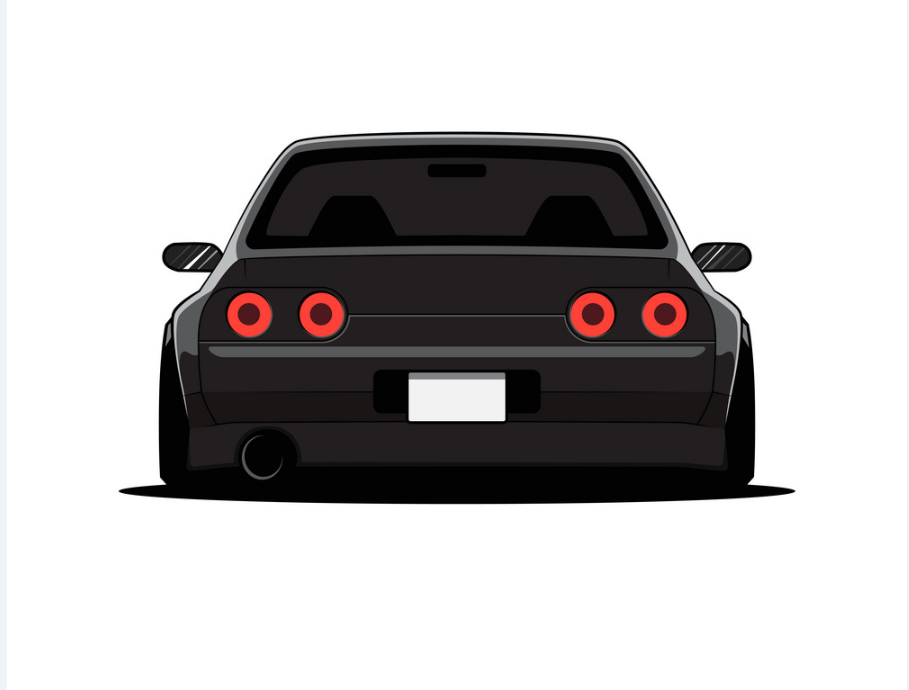
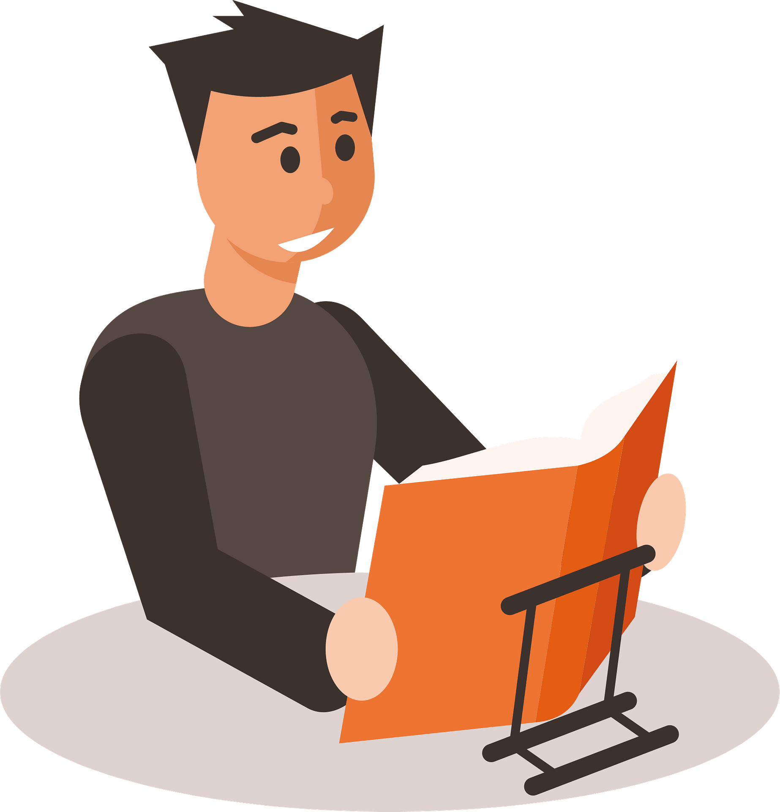

Во моето слободно време често сакам да изучувам некоја техника или технологија која понатака ќе ми помогне во животот или кариерата. Исто така уживам во возењето и модифицирањето на автомобили, која ми е голема пасија. Некои денови кога сакам да сум во поопуштена атмосфера знам да се задлабочам во некоја интересна книга.